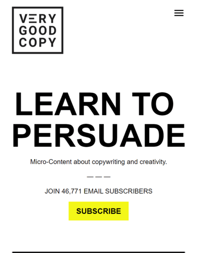

White space and Clean Design
Apple
Apple Website
The apple mobile website is a perfect example for white space and clean design. The use of white space on the iPhone 14 advertisement is perfect, because it draws your eyes to the links to learn more or shop. This is also a very clear example of clean design because the idea is very clearly expressed without having too much clutter that distracts.
Hick's Law
Microsoft
Microsoft Website
This is a great example of Hick's law beacuse the user is not bombared with choices, but instead is only given one on the home page of the Microsoft website. This ensures that users are not overwhelmed with the amount of options. This ensure that the user does not get frustrated and leave your website because of too many choices.
Fitt's Law
VeryGoodCopy
VeryGoodCopy website The blog VeryGoodCopy gives us a great example of Fitt's law by placing a large button not far from the mouse (or from a tap on the phone), to subscribe to their emails. The size and location of the button shows a perfect example of the basic principles of Fitt's law. Low effort increases usability of your webiste.